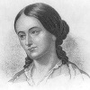

19 Haziran 1850 tarihinde fırtınalı bir gecede Elizabeth adlı yük gemisi, New York’taki Long Island yakınlarında karaya oturdu. Rüzgar ve dalgalar nedeniyle sadece pek az yolcu kıyıya sağ salim çıkabildi. Çoğu dalgaların altında helak oldu. Boğulanlardan biri de Amerikalı filozof, maceracı ve reformcu Margaret Fuller’di (1810–1850). İtalya’dan New York’a dönüyordu.
Bu sırada kırk yaşlarında olan Fuller Transandantal Klübü üyesiydi. Bu klüp, Boston merkezli bir 19. yy felsefe hareketiydi. Fuller, aynı zamanda Woman in the Nineteenth Century (19.yy’da Kadın / 1845) isimli kitabı ile de tanınmıştı. Bu kitap Amerikan tarihinin ilk feminist metinlerinden biri olarak kabul edilmektedir.

Fuller, Massachusetts’teki Cambridge’te doğdu. Kongre üyesi olan babası Timothy Fuller (1778–1835) tarafından eğitildi. Babası onu edebiyat, müzik ve Yunanca alanında yetiştirmişti. Kızını nefessiz bırakan katı bir ders çizelgesi uyguluyordu: “Bazen geç saatlere kadar ayakta kaldığım olurdu. Gerçekten de sert bir öğretmendi. Bu hem düşünme biçiminden hem de benimle ilgili hırslarından kaynaklanıyordu. Okumalar bitene kadar son derece gergin olurdum,” diye yazacaktı daha sonraları.
Yirmi altı yaşındayken, filozof Ralph Waldo Emerson (1803–1882) ile tanıştı. Emerson ondan Transandantalist dergi The Dial’a katkıda bulunmasını istemişti. The Dial Emerson, Bronson Alcott (1799–1888) ve Elizabeth Peabody (1804–1894) gibi yazarların çalışmalarının yayınlandığı etkili bir yayın organıydı. Fuller, 1839 yılında derginin editörü oldu.
1843 yılında The Great Lawsuit: Man vs. Men and Woman vs. Women (Büyük Dava: Erkek Erkeklere, Kadın Kadınlara Karşı) isimli bir makale yayınladı. İki yıl sonra Woman in the Nineteenth Century isimli çalışmasını kaleme aldı. Transandantalist düşüncenin bireyin kutsallığına verdiği önemden hareketle cinsiyet eşitliğini savunuyordu.
Fuller’in çalışmaları New York Tribune’un editörü Horace Greeley’i (1811–1872) etkilemişti. Greeley, ondan İtalya’daki devrimci hareketle ilgili raporlar yazmasını istedi. Fuller İtalya’dayken asil ve devrimci lider Marchese Giovanni Angelo Ossoli ile tanıştı. Birbirlerine aşık oldular. Çiftin 1848 yılında Angelo isimli bir çocukları oldu.
Devrim yenilgiye uğrayınca çift Roma’dan ayrılmak zorunda kaldı. ABD’ye geri dönmeye kadar verdiler. O fırtınalı gecede gemide Fuller’ın yanında Ossoli ve küçük oğulları da vardı. Kazada hepsi hayatını kaybetti.
Ek Bilgiler
1- “The Massachusetts”te yazan Nathaniel Hawthorne (1804–1864), Fuller’den hoşlanmıyordu. Olumsuz yönleriyle bilinen iki kurgusal karakteri ondan ilham alarak yarattığı söylenir: “The Blithedale”deki Zenobia (1852) ve “The Scarlet Letter”daki (Kırmızı Damga) Hester Prynne (1850).
2- Fuller’in yeğeninin oğlu Buckminster Fuller (1895–1983) geodezik kubbeyi bulmuştur.
3- Emerson, gemi kazasından sonra Henry Thoreau (1817–1862) isimli yazarı Fuller’den geriye kalanları araştırması için yolladı. Ancak hiçbir şey bulunamadı. Buna rağmen Massachusettes’teki Cambridge’de
Mount Auburn Mezarlığı’nda onun adına bir anıt mezar yapılmıştır.